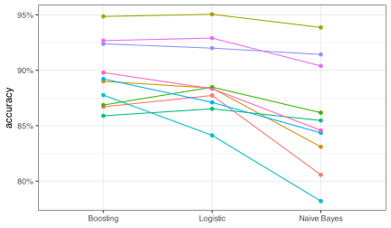
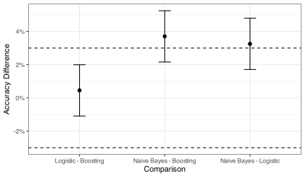
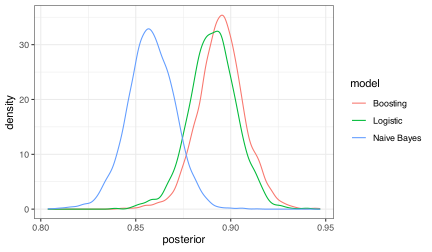

req_pkg <- c("bestNormalize", "broom.mixed", "C50", "discrim", "embed",
"glmnet", "klaR", "lme4", "multcomp", "rstanarm", "rules", "splines2",
"tidymodels", "tidyposterior")
# Check to see if they are installed:
pkg_installed <- vapply(req_pkg, rlang::is_installed, logical(1))
# Install missing packages:
if ( any(!pkg_installed) ) {
install_list <- names(pkg_installed)[!pkg_installed]
pak::pak(install_list)
}14 Comparing Models
This book’s chapter involved taking models that have been fit or resampled and using their results to formally compare them.
14.1 Requirements
You’ll need 14 packages (bestNormalize, broom.mixed, C50, discrim, embed, glmnet, klaR, lme4, multcomp, rstanarm, rules, splines2, tidymodels, and tidyposterior) for this chapter. You can install them via:
Let’s load the meta package and manage some between-package function conflicts. We’ll also load some packages that are used for the data analysis.
library(tidymodels)
tidymodels_prefer()
theme_set(theme_bw())
# Other packages that we will load below
# For feature engineering:
library(embed)
library(bestNormalize)
# For models:
library(discrim)
library(rules)
# For Frequentist analysis:
library(lme4)
library(broom.mixed)
library(multcomp)
# For Bayesian analysis:
library(tidyposterior)14.2 Example Data
We’ll use the forestation data just as in the book. These data have already been split, and some interactions have been assessed. Those are captured in two remote RData files:
The first file contains these relevant objects:
forested_split
#> <Training/Testing/Total>
#> <4832/1371/6203>
forested_train
#> # A tibble: 4,832 × 17
#> class year elevation eastness northness roughness dew_temp precip_annual
#> * <fct> <dbl> <dbl> <dbl> <dbl> <dbl> <dbl> <dbl>
#> 1 Yes 2005 113 -25 96 30 6.4 1710
#> 2 No 2005 164 -84 53 13 6.06 1297
#> 3 Yes 2005 299 93 34 6 4.43 2545
#> 4 Yes 2005 806 47 -88 35 1.06 609
#> 5 Yes 2005 736 -27 -96 53 1.35 539
#> 6 Yes 2005 636 -48 87 3 1.42 702
#> # ℹ 4,826 more rows
#> # ℹ 9 more variables: temp_annual_mean <dbl>, temp_annual_min <dbl>,
#> # temp_annual_max <dbl>, temp_january_min <dbl>, vapor_min <dbl>,
#> # vapor_max <dbl>, county <fct>, longitude <dbl>, latitude <dbl>
forested_test
#> # A tibble: 1,371 × 17
#> class year elevation eastness northness roughness dew_temp precip_annual
#> * <fct> <dbl> <dbl> <dbl> <dbl> <dbl> <dbl> <dbl>
#> 1 No 2014 308 -70 -70 4 3.07 233
#> 2 No 2014 119 94 31 2 3.74 200
#> 3 No 2014 795 -74 66 39 0.17 255
#> 4 Yes 2014 1825 99 -9 78 -3.37 1241
#> 5 No 2014 126 83 -55 6 4.08 234
#> 6 Yes 2014 1056 99 7 57 -1.6 557
#> # ℹ 1,365 more rows
#> # ℹ 9 more variables: temp_annual_mean <dbl>, temp_annual_min <dbl>,
#> # temp_annual_max <dbl>, temp_january_min <dbl>, vapor_min <dbl>,
#> # vapor_max <dbl>, county <fct>, longitude <dbl>, latitude <dbl>
forested_rs
#> # A tibble: 10 × 2
#> splits id
#> <list> <chr>
#> 1 <split [4127/489]> Fold01
#> 2 <split [4080/491]> Fold02
#> 3 <split [4074/505]> Fold03
#> 4 <split [4185/434]> Fold04
#> 5 <split [4116/475]> Fold05
#> 6 <split [4049/523]> Fold06
#> # ℹ 4 more rowsThe second file has this important formula object that contains what we think are important interactions:
forested_int_form
#> ~dew_temp:elevation + dew_temp:temp_annual_max + dew_temp:temp_january_min +
#> eastness:vapor_max + temp_annual_max:vapor_max14.3 Model Fitting
We’ll need to resample a few models. We’ll cut to the chase and resample the tuning parameters found to be optimal in the regular text.
First, we load some additional packages and create some preliminaries:
# For resampling the models
ctrl_rs <-
control_resamples(
save_pred = TRUE,
parallel_over = "everything",
save_workflow = TRUE # Keep this for as_workflow_set()
)
cls_mtr <- metric_set(accuracy)We start by resampling the boosted tree with the tuning parameter values that were found during the grid search:
boost_spec <-
C5_rules(trees = 60, min_n = 20) |>
set_engine("C5.0", control = C50::C5.0Control(seed = 864))
boost_wflow <- workflow(class ~ ., boost_spec)
set.seed(526)
boost_res <-
fit_resamples(
boost_wflow,
resamples = forested_rs,
control = ctrl_rs,
metrics = cls_mtr
)
# Save the individual resamples and change the name of the accuracy column.
boost_metrics <-
collect_metrics(boost_res, summarize = FALSE) |>
select(id, Boosting = .estimate)
Warning
Although we strive for reproducibility, it can be difficult. The boosted tree results from the main text (where it was tuned) used slightly different random numbers than when we trained for a single model. Nine of the ten resamples had different accuracy results; the mean difference between the two was 0.07%, and the largest difference was 0.84%. This is obviously very small, but it does lead to different results here than in the main text. The conclusions will not change.
Now let’s create the logistic regression. There is a fair amount of preprocessing and feature engineering. The rationale for these will be discussed in a future chapter in Part 4.
You’ll see below that, although the model uses a single penalty value, we pass a sequence of penalties to the lambda parameter of glmnet::glmnet(). See parsnip issue #431 for some background.
The model is a full ridge regression model since mixture = 0.
logistic_rec <-
recipe(class ~ ., data = forested_train) |>
# standardize numeric predictors
step_orderNorm(all_numeric_predictors()) |>
# Convert to an effect encoding
step_lencode_mixed(county, outcome = "class") |>
# Create pre-defined interactions
step_interact(!!forested_int_form) |>
# 10 spline terms for certain predictors
step_spline_natural(
all_numeric_predictors(),
-county,
-eastness,
-northness,
-year,
-contains("_x_"),
deg_free = 10
) |>
# Remove any linear dependencies
step_lincomb(all_predictors())
# ------------------------------------------------------------------------------
logistic_pen <- 10^seq(-6, -1, length.out = 50)
logistic_spec <-
# Values here were determined via grid search:
logistic_reg(penalty = 2.12095088792019e-05, mixture = 0.0) |>
set_engine("glmnet", path_values = !!logistic_pen)
# ------------------------------------------------------------------------------
logistic_wflow <- workflow(logistic_rec, logistic_spec)
logistic_res <-
logistic_wflow |>
fit_resamples(
resamples = forested_rs,
control = ctrl_rs,
metrics = cls_mtr
)
logistic_metrics <-
collect_metrics(logistic_res, summarize = FALSE) |>
select(id, Logistic = .estimate)Now, the naive Bayes model. There is no need for feature engineering and not much in the way of tuning parameters.
nb_rec <-
recipe(class ~ ., data = forested_train) |>
step_orderNorm(all_numeric_predictors())
nb_wflow <- workflow(nb_rec, naive_Bayes())
nb_res <-
nb_wflow |>
fit_resamples(
resamples = forested_rs,,
control = ctrl_rs,
metrics = cls_mtr
)
nb_metrics <-
collect_metrics(nb_res, summarize = FALSE) |>
select(id, `Naive Bayes` = .estimate)During resampling, this model will probably provide some warnings when fit that resemble:
Numerical 0 probability for all classes with observation X
This occurs because the model multiplies about a dozen probabilities together. The consequence is that some of these products become very close to zero, and R complains a bit about this.
14.4 A Workflow Set
Another method for resampling or tuning a series of preprocessors and/or models is to create a workflow set. We’ll see these more in later chapters. Let’s take our previous set of three model results and coerce them into a workflow set.
forested_wflow_set <- as_workflow_set(
Boosting = boost_res,
Logistic = logistic_res,
`Naive Bayes` = nb_res
)
forested_wflow_set
#> # A workflow set/tibble: 3 × 4
#> wflow_id info option result
#> <chr> <list> <list> <list>
#> 1 Boosting <tibble [1 × 4]> <opts[0]> <rsmp[+]>
#> 2 Logistic <tibble [1 × 4]> <opts[0]> <rsmp[+]>
#> 3 Naive Bayes <tibble [1 × 4]> <opts[0]> <rsmp[+]>
forested_wflow_set |> rank_results()
#> # A tibble: 3 × 9
#> wflow_id .config .metric mean std_err n preprocessor model rank
#> <chr> <chr> <chr> <dbl> <dbl> <int> <chr> <chr> <int>
#> 1 Boosting Preprocessor1_… accura… 0.8952 0.009321 10 formula C5_r… 1
#> 2 Logistic Preprocessor1_… accura… 0.8906 0.01038 10 recipe logi… 2
#> 3 Naive Bayes Preprocessor1_… accura… 0.8581 0.01542 10 recipe naiv… 3We’ll see the advantage of this in a later section.
14.5 Resampled Data Sets
Let’s collect the accuracy values for each resample and model into a data frame. We’ll make a “wide” version with three columns for each of the three models and a “long” version where there is a column for each model and another for the accuracies. We call the column with the model pipeline.
We’ll also plot the data to show that it is similar to the one in the main text.
accuracy_df <-
boost_metrics |>
full_join(logistic_metrics, by = "id") |>
full_join(nb_metrics, by = "id")
accuracy_df
#> # A tibble: 10 × 4
#> id Boosting Logistic `Naive Bayes`
#> <chr> <dbl> <dbl> <dbl>
#> 1 Fold01 0.8671 0.8773 0.8057
#> 2 Fold02 0.8900 0.8839 0.8310
#> 3 Fold03 0.9485 0.9505 0.9386
#> 4 Fold04 0.8687 0.8848 0.8618
#> 5 Fold05 0.8589 0.8653 0.8547
#> 6 Fold06 0.8776 0.8413 0.7820
#> # ℹ 4 more rows
accuracy_long_df <-
accuracy_df |>
pivot_longer(cols = c(-id), names_to = "pipeline", values_to = "accuracy")
accuracy_long_df
#> # A tibble: 30 × 3
#> id pipeline accuracy
#> <chr> <chr> <dbl>
#> 1 Fold01 Boosting 0.8671
#> 2 Fold01 Logistic 0.8773
#> 3 Fold01 Naive Bayes 0.8057
#> 4 Fold02 Boosting 0.8900
#> 5 Fold02 Logistic 0.8839
#> 6 Fold02 Naive Bayes 0.8310
#> # ℹ 24 more rows
accuracy_long_df |>
ggplot(aes(pipeline, accuracy)) +
geom_point(aes(col = id), show.legend = FALSE) +
geom_line(aes(group = id, col = id), show.legend = FALSE) +
scale_y_continuous(label = label_percent()) +
labs(x = NULL)
Now we can start analyzing the data in different ways.
14.5.1 Statistical Foundations
We’ll start with the Frequentist perspective.
14.5.2 Frequentist Hypothesis Testing Methods
We take the wide version of the accuracy data and fit a linear regression to it in a way that accounts for the resample-to-resample effect. Let’s take a minute and think about how our model will set up the parameter estimates.
Since the data in the pipeline column is currently character, the model function will convert this column to a factor and assign the factor level order alphabetically. This means that the levels are: Boosting, Logistic, and Naive Bayes. Recall that the default parameterization for indicator variables is a “reference cell” parameterization, so the intercept corresponds to the first factor level. This means that, in terms of the fixed effects, we interpret parameter estimates as:
\[ \hat{y}_{ij} = \underbrace{\quad \hat{\beta}_0\quad }_{\tt{Boosting}} + \underbrace{\quad \hat{\beta}_1 \quad }_{\tt{Boosting - Logistic}} +\underbrace{\quad \hat{\beta}_2\quad }_{\tt{Boosting - Naive\: Bayes}} \]
Using lme4::lmer() to fit the model, we specify pipeline as the fixed effect and designate a random effect due to resampling as (1|id), where 1 symbolizes the intercept.
The results are:
freq_mixed_mod <- lmer(accuracy ~ pipeline + (1|id), data = accuracy_long_df)
freq_mixed_mod |> tidy()
#> # A tibble: 5 × 6
#> effect group term estimate std.error statistic
#> <chr> <chr> <chr> <dbl> <dbl> <dbl>
#> 1 fixed <NA> (Intercept) 0.8952 0.01200 74.57
#> 2 fixed <NA> pipelineLogistic -0.004504 0.007520 -0.5989
#> 3 fixed <NA> pipelineNaive Bayes -0.03702 0.007520 -4.922
#> 4 ran_pars id sd__(Intercept) 0.03403 NA NA
#> 5 ran_pars Residual sd__Observation 0.01682 NA NAThe model term corresponding to term = "sd__(Intercept)" is the standard deviation of the random effects, and the one with a term value of sd__Observation is the residual standard deviation. Note that the former is almost twice the size of the latter; the resample-to-resample effect is very large for these data.
Notice that p-values that are not automatically computed. This is addressed by reading help("pvalues") or the package vignette called “Fitting Linear Mixed-Effects Models using lme4”. The CRAN PDF for the latter is here. We can create approximate p-values using the lmerTest or multicomp packages.
We’ll show the multicomp package but first we will define contrasts of the parameter estimates that provide all three pairwise comparisons.
We’ll use the multcomp::glht() function1 to generate them. The glht() function relies on another function from that package called mcp()2, and that can be used to sort out the details. For the raw (but approximate) p-values, we simply give it a single contrast at a time:
raw_res <- NULL
for (i in 1:nrow(comparisons)) {
raw_res <-
bind_rows(
raw_res,
freq_mixed_mod |>
glht(linfct = mcp(pipeline = comparisons[i,,drop = FALSE])) |>
summary() |>
tidy() |>
rename(raw_pvalue = adj.p.value)
)
}
raw_res |>
select(-term, -null.value)
#> # A tibble: 3 × 5
#> contrast estimate std.error statistic raw_pvalue
#> <chr> <dbl> <dbl> <dbl> <dbl>
#> 1 Boosting - Logistic -0.004504 0.007520 -0.5989 0.5493
#> 2 Boosting - Naive Bayes -0.03702 0.007520 -4.922 0.0000008554
#> 3 Naive Bayes - Logistic -0.03251 0.007520 -4.323 0.00001536Again, due to differences in random numbers, the accuracy numbers are slightly different. Consequently, the p-values are also different in value but not in interpretation.
14.5.2.1 Post Hoc Pairwise Comparisons and Protecting Against False Positive Findings
To compute the Bonferroni or FDR adjustments, we can use the stats::p.adjust() package. However, for the FDR, there are many alternatives. In CRAN alone:
tools::CRAN_package_db() |>
as_tibble() |>
filter(grepl("(fdr)|(false discovery rate)", tolower(Description))) |>
mutate(Title = gsub("\n", "", Title)) |>
select(Package, Title)
#> # A tibble: 85 × 2
#> Package Title
#> <chr> <chr>
#> 1 adaptMT Adaptive P-Value Thresholding for Multiple Hypothesis Testing…
#> 2 alpha.correction.bh Benjamini-Hochberg Alpha Correction
#> 3 APFr Multiple Testing Approach using Average Power Function (APF) …
#> 4 ashr Methods for Adaptive Shrinkage, using Empirical Bayes
#> 5 bayefdr Bayesian Estimation and Optimisation of Expected False Discov…
#> 6 BonEV An Improved Multiple Testing Procedure for Controlling FalseD…
#> # ℹ 79 more rowsand even more on Bioconductor:
BiocManager::available("(fdr)|(false discovery rate)")
#> [1] "bayefdr" "benchmarkfdrData2019" "cffdrs"
#> [4] "CorrectedFDR" "dfdr" "DiscreteFDR"
#> [7] "EFDR" "fcfdr" "fdrame"
#> [10] "fdrci" "fdrDiscreteNull" "FDRestimation"
#> [13] "FDRsamplesize2" "FDRsampsize" "fdrtool"
#> [16] "GFDrmst" "GFDrmtl" "LFDR.MLE"
#> [19] "LFDR.MME" "LFDREmpiricalBayes" "locfdr"
#> [22] "nzffdr" "onlineFDR" "pafdR"
#> [25] "pwrFDR" "repfdr" "RFlocalfdr"
#> [28] "RFlocalfdr.data" "sffdr" "simpleFDR"
#> [31] "SNVLFDR" "ssize.fdr" "swfdr"stats::p.adjust() is very simple to use:
raw_res |>
mutate(
Bonnferoni = p.adjust(raw_pvalue, method = "bonferroni"),
FDR = p.adjust(raw_pvalue, method = "BH")
) |>
select(-term, -null.value, -estimate)
#> # A tibble: 3 × 6
#> contrast std.error statistic raw_pvalue Bonnferoni FDR
#> <chr> <dbl> <dbl> <dbl> <dbl> <dbl>
#> 1 Boosting - Logistic 0.007520 -0.5989 0.5493 1 0.5493
#> 2 Boosting - Naive Bayes 0.007520 -4.922 0.0000008554 0.000002566 0.000002566
#> 3 Naive Bayes - Logistic 0.007520 -4.323 0.00001536 0.00004609 0.00002304For Tukey’s HSD, we can use glht() again:
freq_mixed_mod |>
glht(linfct = mcp(pipeline = "Tukey")) |>
summary() |>
tidy() |>
select(-term, -null.value, -estimate)
#> # A tibble: 3 × 4
#> contrast std.error statistic adj.p.value
#> <chr> <dbl> <dbl> <dbl>
#> 1 Logistic - Boosting 0.007520 -0.5989 0.8207
#> 2 Naive Bayes - Boosting 0.007520 -4.922 0.000002667
#> 3 Naive Bayes - Logistic 0.007520 -4.323 0.0000422314.5.2.2 Comparing Performance using Equivalence Tests
We’ll conduct the Two One-Sided Test (TOST) procedure by computing the confidence intervals on the differences, which we can compute via glht() with the Tukey correction:
From these data, we can create the same plot as the main text:
difference_int |>
ggplot(aes(x = contrast, y = -estimate)) +
geom_point(size = 2) +
geom_errorbar(aes(ymin = -conf.low, ymax = -conf.high), width = 1 / 7) +
geom_hline(yintercept = c(-0.03, 0.03), linetype = 2) +
ylim(-0.07, 0.07) +
labs(x = "Comparison", y = "Accuracy Difference") +
scale_y_continuous(label = label_percent()) 
14.5.3 Comparisons Using Bayesian Models
For Bayesian evaluation, tidymodels replies heavily on the rstanarm package, which is based on Stan. The tidyposterior package is the main interface for tidymodels objects. The main function, tidyposterior::perf_mod(), has methods for several types of objects. First, we’ll show how to use it with a basic data frame of results, then with specific types of tidymodels objects.
When the resampled performance estimates are in a data frame, it should be in the “wide” format, such as accuracy_df. The simplest use of the function is:
set.seed(101)
basic_bayes_mod <- perf_mod(accuracy_df, refresh = 0)
basic_bayes_mod
#> Bayesian Analysis of Resampling Results
# The underlying Stan model:
basic_bayes_mod |>
pluck("stan") |>
print(digits = 3)
#> stan_glmer
#> family: gaussian [identity]
#> formula: statistic ~ model + (1 | id)
#> observations: 30
#> ------
#> Median MAD_SD
#> (Intercept) 0.895 0.011
#> modelLogistic -0.004 0.008
#> modelNaive Bayes -0.037 0.008
#>
#> Auxiliary parameter(s):
#> Median MAD_SD
#> sigma 0.018 0.003
#>
#> Error terms:
#> Groups Name Std.Dev.
#> id (Intercept) 0.03491
#> Residual 0.01857
#> Num. levels: id 10
#>
#> ------
#> * For help interpreting the printed output see ?print.stanreg
#> * For info on the priors used see ?prior_summary.stanregThe broom.mixed package’s tidy() method can also be used:
basic_bayes_mod |>
pluck("stan") |>
tidy()
#> # A tibble: 5 × 4
#> term estimate std.error group
#> <chr> <dbl> <dbl> <chr>
#> 1 (Intercept) 0.8950 0.01146 <NA>
#> 2 modelLogistic -0.004410 0.008247 <NA>
#> 3 modelNaive Bayes -0.03717 0.008039 <NA>
#> 4 sd_(Intercept).id 0.03491 NA id
#> 5 sd_Observation.Residual 0.01857 NA Residualtidyposterior also has a tidy() method for obtaining a sample from the posterior that has been configured not to be in the format of the parameters but in terms of the model means.
set.seed(185)
basic_bayes_post <-
basic_bayes_mod |>
tidy()
basic_bayes_post
#> # Posterior samples of performance
#> # A tibble: 12,000 × 2
#> model posterior
#> <chr> <dbl>
#> 1 Boosting 0.8913
#> 2 Logistic 0.9014
#> 3 Naive Bayes 0.8676
#> 4 Boosting 0.9014
#> 5 Logistic 0.9074
#> 6 Naive Bayes 0.8636
#> # ℹ 11,994 more rowsThis object also has a summary object to get credible intervals:
summary(basic_bayes_post, prob = 0.9)
#> # A tibble: 3 × 4
#> model mean lower upper
#> <chr> <dbl> <dbl> <dbl>
#> 1 Boosting 0.8949 0.8749 0.9156
#> 2 Logistic 0.8905 0.8700 0.9113
#> 3 Naive Bayes 0.8579 0.8370 0.8782and an autoplot() method:
autoplot(basic_bayes_post)
To take a look at pairwise differences, there is tidyposterior::contrast_models(). This takes the objects produced by perf_mod() and two vector arguments of groups to compare. If these two group arguments are left to their defaults, all comparisons are used:
set.seed(185)
basic_bayes_diff_post <-
basic_bayes_mod |>
contrast_models()
basic_bayes_diff_post
#> # Posterior samples of performance differences
#> # A tibble: 12,000 × 4
#> difference model_1 model_2 contrast
#> <dbl> <chr> <chr> <chr>
#> 1 -0.01012 Boosting Logistic Boosting vs. Logistic
#> 2 -0.005995 Boosting Logistic Boosting vs. Logistic
#> 3 -0.005884 Boosting Logistic Boosting vs. Logistic
#> 4 0.0002408 Boosting Logistic Boosting vs. Logistic
#> 5 0.002266 Boosting Logistic Boosting vs. Logistic
#> 6 0.01333 Boosting Logistic Boosting vs. Logistic
#> # ℹ 11,994 more rowsThere is an autoplot() method, but the summary() method is more interesting since that is where the ROPE analysis can be conducted. Using default arguments gives the 90% credible intervals on the differences:
summary(basic_bayes_diff_post)
#> # A tibble: 3 × 9
#> contrast probability mean lower upper size pract_neg pract_equiv
#> <chr> <dbl> <dbl> <dbl> <dbl> <dbl> <dbl> <dbl>
#> 1 Boosting vs Lo… 0.6992 0.004403 -0.009418 0.01798 0 NA NA
#> 2 Boosting vs Na… 1 0.03701 0.02354 0.05048 0 NA NA
#> 3 Logistic vs Na… 0.9998 0.03260 0.01831 0.04643 0 NA NA
#> # ℹ 1 more variable: pract_pos <dbl>Using the size argument enables a ROPE analysis:
summary(basic_bayes_diff_post, size = 0.03) |>
select(contrast, starts_with("pract"))
#> # A tibble: 3 × 4
#> contrast pract_neg pract_equiv pract_pos
#> <chr> <dbl> <dbl> <dbl>
#> 1 Boosting vs Logistic 0.0005 0.9962 0.00325
#> 2 Boosting vs Naive Bayes 0 0.1892 0.8108
#> 3 Logistic vs Naive Bayes 0 0.372 0.628There are an abundance of options that can be used with perf_mod(), including:
The
transformargument can convert the metric to a different scale before the analysis and back transforms when creating posteriors. For example, if you believe that \(log(RMSE)\) should be used in the analysis, use this argument.When we think that the probability distributions of the metrics have different variances, the
hetero_varis logical and can enable that. Be aware that this option makes the model fit more complex, which may result in convergence issues.Set Stan’s random number seed using the
seedargument.
There are also options that can be passed to the Stan fit, including:
- Sampling-related options such as
chains(number of MCMC chains) andcores(how many things to do in parallel). - Prior distributions for parameters. Of interest might be:
-
prior_aux: the prior for the distribution’s scale parameter (e.g. \(\sigma\) for the Gaussian). -
prior_intercept: the distribution for the random intercepts. -
prior: distributions for the regression parameters.
-
For priors, the Stan page on priors is important to read since it details how the default priors are automatically scaled. The page on sampling is also very helpful.
Finally, you can use perf_mod() with other types of tidymodels objects. For example, if you want to conduct a within-model analysis where you compare candidates (say from a grid search), you can pass that as the first argument to perf_mod().
If you have a workflow set, you can perform within- and/or between-model comparisons. This can potentially compare a large number of model/candidate combinations.
We previously created forested_wflow_set to house our resampling results. Here is how we could use that object for the analysis:
set.seed(24)
forested_wflow_set |>
perf_mod(
seed = 310,
iter = 10000,
chains = 10,
# Don't print a log:
refresh = 0,
prior_aux = rstanarm::exponential(floor(1/sd(accuracy_long_df$accuracy))),
prior_intercept = rstanarm::cauchy(0, 1),
prior = rstanarm::normal(0, 5)
) |>
contrast_models() |>
summary(size = 0.03) |>
select(contrast, starts_with("pract"))
#> # A tibble: 3 × 4
#> contrast pract_neg pract_equiv pract_pos
#> <chr> <dbl> <dbl> <dbl>
#> 1 Boosting vs Logistic 0.0003 0.9971 0.00264
#> 2 Boosting vs Naive Bayes 0 0.1941 0.8059
#> 3 Logistic vs Naive Bayes 0 0.3749 0.625114.6 Single Holdout Data Sets
For bootstrap confidence intervals, there is a helper function rsample::int_pctl() that has methods that can work for resampled objects (e.g., tune::fit_resamples()) and the outputs from the various tune_*() functions.
As an example, if we were using a validation set, we could produce the 90% bootstrap interval for the model via:
int_pctl(boost_res, times = 2000, alpha = 0.1)By default, this will compute intervals for every tuning parameter candidate and metric in the data (but there are arguments that can be used to restrict the computations to a smaller set).
For a test set, we encourage users to use last_fit(). Let’s suppose that we still can’t decide if the boosted tree or logistic regression is the final model. We can fit them and evaluate their test set via:
boost_final_res <-
last_fit(boost_wflow, split = forested_split, metrics = cls_mtr)
logistic_final_res <-
last_fit(logistic_wflow, split = forested_split, metrics = cls_mtr)then use:
set.seed(885)
int_pctl(boost_final_res, times = 2000, alpha = 0.1)
#> # A tibble: 1 × 6
#> .metric .estimator .lower .estimate .upper .config
#> <chr> <chr> <dbl> <dbl> <dbl> <chr>
#> 1 accuracy bootstrap 0.8651 0.8795 0.8942 Preprocessor1_Model1
set.seed(885)
int_pctl(logistic_final_res, times = 2000, alpha = 0.1)
#> # A tibble: 1 × 6
#> .metric .estimator .lower .estimate .upper .config
#> <chr> <chr> <dbl> <dbl> <dbl> <chr>
#> 1 accuracy bootstrap 0.8578 0.8730 0.8877 Preprocessor1_Model1To compute intervals on differences, there is no current interface. However, you can use the core functions to get the results. For example, we can join the predictions for different models by their row number:
paired_class_pred <-
logistic_final_res |>
collect_predictions() |>
select(.row, class, logistic = .pred_class) |>
full_join(
boost_final_res |>
collect_predictions() |>
select(.row, boosting = .pred_class),
by = ".row"
)
paired_class_pred
#> # A tibble: 1,371 × 4
#> .row class logistic boosting
#> <int> <fct> <fct> <fct>
#> 1 4833 No No No
#> 2 4834 No No No
#> 3 4835 No No No
#> 4 4836 Yes Yes Yes
#> 5 4837 No No No
#> 6 4838 Yes Yes Yes
#> # ℹ 1,365 more rowsthen create bootstrap samples:
set.seed(649)
paired_class_bt <-
paired_class_pred |>
bootstraps(times = 2000)We can write a function to get the difference:
metric_diff <- function(split) {
# Get the bootstrap sample:
est <-
split |>
rsample::analysis() |>
# Stack the rows
tidyr::pivot_longer(
cols = c(-.row, -class),
names_to = "model",
values_to = "estimate"
) |>
dplyr::group_by(model) |>
yardstick::accuracy(class, estimate)
tibble::tibble(term = "Boosting - Logistic", estimate = -diff(est$.estimate))
}
# Run on one sample to demonstrate:
paired_class_bt$splits[[1]] |> metric_diff()
#> # A tibble: 1 × 2
#> term estimate
#> <chr> <dbl>
#> 1 Boosting - Logistic -0.01240
# Run on all:
paired_class_bt <-
paired_class_bt |>
mutate(stats = map(splits, metric_diff))
int_pctl(paired_class_bt, stats, alpha = .1)
#> # A tibble: 1 × 6
#> term .lower .estimate .upper .alpha .method
#> <chr> <dbl> <dbl> <dbl> <dbl> <chr>
#> 1 Boosting - Logistic -0.005106 0.006411 0.01823 0.1 percentile